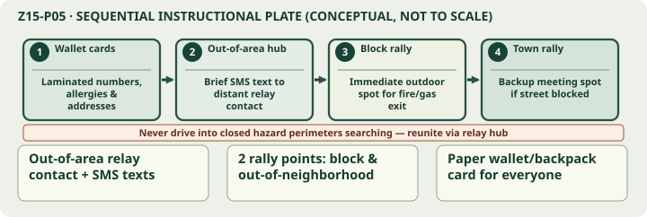

Z15-P05 · Disaster scenarios · New manuscript
Maintain household communication cards, out-of-area relays, and rally points
Reunite separated family members reliably when disasters strike during school or work hours and local cell circuits overload.
When it applies · Families, roommates, and households whose members commute to separate schools, jobs, or care sites.
Equipment · Laminated wallet contact cards for every member, designated out-of-area relay person, and two mapped physical rally points.

Actions
- Designate ONE out-of-area emergency contact (relative or friend living in another state/region outside the local disaster zone)—during regional disasters, local calls often jam while brief SMS texts to an out-of-area number still get through so everyone checks in through one hub.[T11, D13]
- Agree on TWO physical meeting places BEFORE an emergency: 1) Neighborhood rally point right outside your block (for house fires or gas leaks), and 2) Out-of-neighborhood or out-of-town rally point (library, school, relative's home) if police block entry to your street.[T11, D13]
- Put a laminated paper contact card (names, phones, rally addresses, medical allergies, school pick-up authorization) in every adult wallet and child backpack so no one depends on a dead smartphone screen.[T11, D13]
Failure recognition · Losing cell service during a midday tornado while family members drive to opposite sides of town guessing where everyone else went.[T11, D13]
Verify · Confirm every member carries a paper contact card, knows the out-of-area relay, and has walked or viewed both physical rally points.[T11, D13]
Stop or change course · Never drive into active law-enforcement road closures or live hazard zones trying to locate family—check in via the out-of-area contact and designated rally point.[D13, D14]
Evidence and editorial notes
- D13 · FEMA / Ready.gov · Make a Plan (current web edition)
- Section: Communications Outages, SMS Priority, and Out-of-Area Rally Contacts · Conditions: Regional cellular congestion, tower power loss, or internet blackouts
Support: Use short SMS text messages instead of voice calls when cell networks congest, designate an out-of-area contact person to relay family status, establish fixed physical household meeting locations (neighborhood and out-of-town), and monitor battery NOAA/AM-FM radio for official updates.
Limitations: Emergency 911 text availability varies by county; confirm local PSAP capability in advance and keep voice dialing primary where reachable. · Conflicting evidence: None; builds on T11 and U16.
Editorial note: Grounds communications-failure fallback and group accountability cards. · Specialist reviewer: Emergency communications and emergency management
Primary source · checked 2026-11-24 - D14 · FEMA / Ready.gov · Evacuation (current web edition)
- Section: Before, during and after evacuation · Conditions: Official evacuation or a preplanned, safely accessible departure
Support: Prepare a go-kit, routes, transport and a contact plan. Follow official routes and use the locally indicated registration or reunification channel.
Limitations: Shelter accessibility and animal accommodations require local and ADA guidance; no fixed national website is assumed. · Conflicting evidence: See A02 claim audit for boundaries.
Editorial note: Core evacuation execution and accountability evidence in Z15. · Specialist reviewer: Emergency management and transportation safety
Primary source · checked 2026-11-24 - T11 · FEMA / Ready.gov · Make a Plan (current web edition)
- Section: Make a Plan > Family Emergency Communication Plan · Conditions: Households and traveling groups preparing for disruptions
Support: Record out-of-area contacts, local meeting places, medical/allergy summaries, and alternate communication channels (text vs voice) in paper and offline formats; practice the plan periodically.
Limitations: Cellular networks often congest during disasters while SMS or out-of-area contacts may still connect. · Conflicting evidence: None; complements outdoor trip-plan cards.
Editorial note: Anchors emergency communication protocols and group contingency plans. · Specialist reviewer: Emergency management and communications
Primary source · checked 2026-11-24
Source lineage · FEMA Ready.gov Make a Plan; new manuscript · Classification · New manuscript.